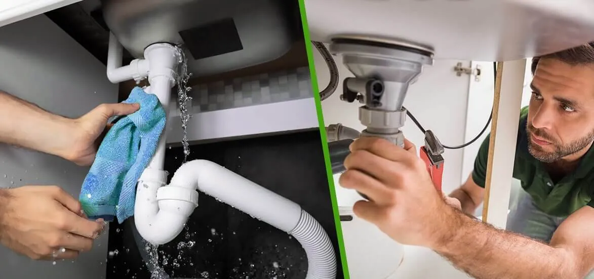

10 Signs That You Need To Call For Emergency Plumbing Services

Plumbing problems don't happen overnight, yet they often go unreported until they become serious. Even with adequate property upkeep, plumbing issues are frequently encountered. While some of these problems can wait until tomorrow, others are more serious and require immediate treatment. Most people picture an emergency when they think of a plumber. However, with simple precautions and common sense, you can avoid many kinds of emergencies! Being proactive is keeping an eye out for any warning signals of impending trouble. When that occurs, you should call your neighborhood emergency plumber in Los Angeles. To avert impending tragedies, watch out for these indicators:
A burst pipe
Put down what you're reading and call an emergency plumber right away if a pipe in your home has burst. Depending on the circumstances, it doesn't take long for your home to become inundated with tonnes of water. Furniture, flooring, cabinets, and even the insulation and wood framing of your home might sustain damage from water. You need to know the exact way to turn off the water. If not, call 24 hour emergency plumbing los angeles and relocate your valuables and devices to a secure location.
Backup of Sewage
Sewage is dangerous to your health. Talk to an emergency plumber straight away if you experience a backup. Invading tree roots, a pipe break, or another type of obstruction can all result in a sewer line backup. Although a sewage backup is annoying, it can also be hazardous. Pathogens can spread and odors from raw sewage are toxic.
Low water pressure
Another consequence of broken pipes is low water pressure. It might be good to start by inspecting your pipes if you see this in many facets. A clogged aerator might be the root of the low water pressure. However, this should only impact one sink unless all aerators are blocked. See if cleaning it fixes the problem. A pressure-regulating valve is installed in the majority of houses. The pressure of the water that flows from the street to the house may be controlled with the help of this valve. Pressure may rise or fall when the valve breaks, depending on how it fails. To replace this, a plumber will need to be called.
Flooding indicators
For your home, flooding is a very real possibility. Some terrifying tales involve homeowners who descend the stairs to their basement one morning only to discover that the flooring is flooded. Some situations are more serious than others. If you ever find water on your flooring, consider it as a warning and call an emergency plumber immediately away. Don't leave it to chance. The foundation of your house, as well as your flooring, furnishings, appliances, and electrical system, to name a few, can all be harmed by the water. A quick remedy might be suggested by an emergency plumber in no time. Call emergency service and ask them about any watermarks you notice on your flooring. At the very least, they can demonstrate how to detect the problem before they physically come out to look at it.
Drain blockages
Every home will eventually experience clogging, but you should still make an effort to avoid it. The system can become clogged by hair, paper towels, and wipes that go into the pipes. Try to keep hair out of the drain and avoid flushing these down the toilet. However, some additional reasons are more difficult to avoid. For instance, tree roots can squeak through the gaps and cause obstructions. These situations might be challenging to spot, which is why you need the best plumbing company for drain cleaning. Slow drainage, bubbling water, puddles of water, and other symptoms are some indications that a drain is plugged. Call a 24 hour emergency plumbing los angeles if you observe these because they can indicate more serious problems.
Frozen Pipes
Winter is almost approaching, therefore you could have to deal with a frozen pipe at some point. If a sudden cold front hits your city and the water in your pipes freezes, you can have issues. Your water pipes' metal may increase because of how much water expands when it freezes. If the pipe defrosts and swells too much, it might break or split and spill. Your home probably has frozen pipes if you turn on the faucet or shower and nothing comes out. As soon as that happens, turn off the faucet and call an emergency plumber.
Flushing Toilet
Imagine going to the restroom and seeing that the toilet has been overflowing ever since the last flush. Maybe you went to the bathroom and saw that it was clogged and opted not to wash it. Whatever the situation, an overflowing toilet can send contaminated water pouring over the floor of the bathroom. If left uncontrolled, it could promote the spread of bacteria and germs in your house, which might lead to infections or respiratory issues. Maybe you tried using the plunger, but it didn't work. Call an emergency plumber in Los Angeles immediately away rather than continuously hurting yourself trying to unclog the toilet.
Bad Smells
Our homes constantly contain bacteria that produce unpleasant odors, particularly in the kitchen and bathroom. However, a different sign that there may be a clog in the main sewage line is if you notice a bad odor emanating from your drain that doesn't go away even after flushing or running hot water.
High Water Charges
Have your water bills gone up recently? I'm very certain it's not just the weather! There could be undiscovered issues with a plumbing system causing this. Your plumbing system may have a large leak, which would explain why your water usage is increasing each month. Call an emergency plumber right away and let only the professionals handle your emergency plumbing problems, regardless of how much it has grown from the previous month or when you first noticed an increase!
Water Heater Not Working
The death of your water heater is another frequent plumbing emergency. The most obvious indication that your water heater has failed is a cold morning shower, although discolored water is one hint. Additionally, you could notice that the smell of your water has changed. Don't forget to give them a call so they can examine your water heater. You shouldn't put off doing this because a broken water heater may have concealed leaks. The last thing you want to do is spend a lot of time scrubbing its tank of water.
You should contact emergency plumbing service los angeles as soon as possible now that you've seen a few signs that you need it. Always choose safety over regret! These are just a few of the many circumstances where hiring a plumber is necessary. Even though these problems seem little, if they go unnoticed, they could develop into the most catastrophic ones. As a result, it is advised to contact an emergency plumber and have the repairs made before they worsen.